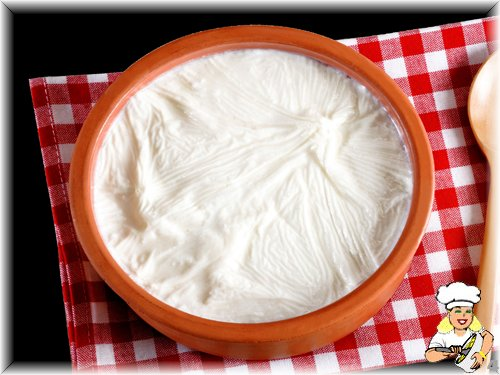

Mavi ve Yeşilin Buluştuğu Körfez Şehri
Nüfus: 2 Milyonun üzerinde.
Gezilecek Yerler: Kartepe, Sekapark, Ormanya ve Maşukiye şehrin en önemli turizm noktalarıdır.
Sanayi: Türkiye'nin en büyük sanayi bölgelerinden biri olan Kocaeli, otomotiv, kimya ve çelik sektörlerinde önemli bir merkezdir.
İzmit Pişmaniyesi

Kandıra Yoğurdu